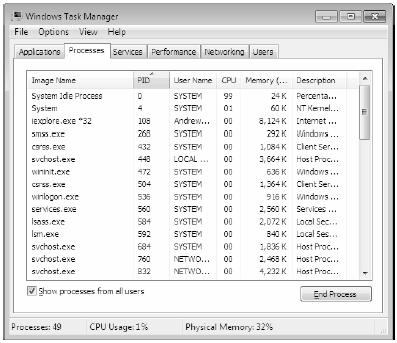
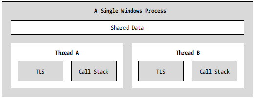

The concept of a “process” has existed within Windows-based operating systems well before the release of the .NET platform. In simple terms, a process is a running program. However, formally speaking, a process is an operating system level concept used to describe a set of resources (such as external code libraries and the primary thread) and the necessary memory allocations used by a running application. For each *.exe loaded into memory, the OS creates a separate and isolated process for use during its lifetime.
Using this approach to application isolation, the result is a much more robust and stable runtime environment, given that the failure of one process does not affect the functioning of another. Furthermore, data in one process cannot be directly accessed by another process, unless you make use of a distributed computing programming API such as Windows Communication Foundation. Given these points, you can regard the process as a fixed, safe boundary for a running application.
Now, every Windows process is assigned a unique process identifier (PID) and may be independently loaded and unloaded by the OS as necessary (as well as programmatically). As you may be aware, the Processes tab of the Windows Task Manager utility (activated via the Ctrl+Shift+Esc keystroke combination) allows you to view various statistics regarding the processes running on a given machine, including its PID and image name (see Figure 16-1).
Note By default, the PID column of the Process tab will not be shown. To enable this feature, activate the View | Select Columns… menu option, and then check the PID (Process Identifier) checkbox.
Figure 16-1 The Windows Task Manager
Every Windows process contains an initial “thread” that functions as the entry point for the application. Chapter 19 examines the details of building multithreaded applications under the .NET platform; however, to facilitate the topics presented here, you need a few working definitions. First of all, a thread is a path of execution within a process. Formally speaking, the first thread created by a process’s entry point is termed the primary thread. Any .NET executable program (Console Application, Windows Forms application, WPF application, etc.) marks its entry point with the Main() method. When this method is invoked, the primary thread is created automatically.
Processes that contain a single primary thread of execution are intrinsically thread safe, given the fact that there is only one thread that can access the data in the application at a given time. However, a single-threaded process (especially one that is GUI-based) will often appear a bit unresponsive to the user if this single thread is performing a complex operation (such as printing out a lengthy text file, performing a mathematically intensive calculation, or attempting to connect to a remote server located thousands of miles away).
Given this potential drawback of single-threaded applications, the Windows API (as well as the .NET platform) makes it possible for the primary thread to spawn additional secondary threads (also termed worker threads) using a handful of Windows API functions such as CreateThread(). Each thread (primary or secondary) becomes a unique path of execution in the process and has concurrent access to all shared points of data within the process.
As you may have guessed, developers typically create additional threads to help improve the program’s overall responsiveness. Multithreaded processes provide the illusion that numerous activities are happening at more or less the same time. For example, an application may spawn a worker thread to perform a labor-intensive unit of work (again, such as printing a large text file). As this secondary thread is churning away, the main thread is still responsive to user input, which gives the entire process the potential of delivering greater performance. However, this may not actually be the case: using too many threads in a single process can actually degrade performance, as the CPU must switch between the active threads in the process (which takes time).
On some machines, multithreading is most commonly an illusion provided by the OS. Machines that host a single (non-hyperthreaded) CPU do not have the ability to literally handle multiple threads at the same exact time. Rather, a single CPU will execute one thread for a unit of time (called a time slice) based in part on the thread’s priority level. When a thread’s time slice is up, the existing thread is suspended to allow another thread to perform its business. For a thread to remember what was happening before it was kicked out of the way, each thread is given the ability to write to Thread Local Storage (TLS) and is provided with a separate call stack, as illustrated in Figure 16-2.
Figure 16-2 The Windows process/thread relationship
If the subject of threads is new to you, don’t sweat the details. At this point, just remember that a thread is a unique path of execution within a Windows process. Every process has a primary thread (created via the executable’s entry point) and may contain additional threads that have been programmatically created.